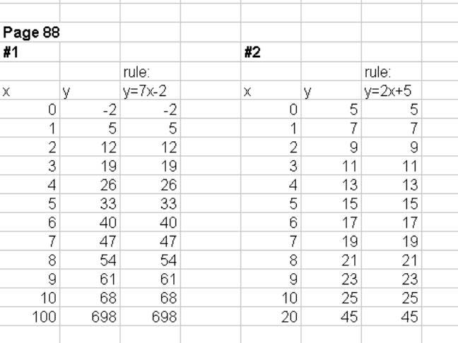

Grace, a 6th grader, works with Don using Email and AIM
Students,
like
If this interests you, please contact Don by email or call toll-free US & CAN 1 800 356 4559, or 001 217 356 4555 from other countries.
At home, I'm learning Advanced Algebra. I come across many problems that are
related to the questions in your worksheet book so I use the book as a reference tool.
Bye, Grace (about 2 years after Don started working with Grace!)
June
12,
2002- Hi Don,
How are you? I'm fine. You know what? I got a 500 in the
SAT in the mathematics section! So I got a scholarship to the 2002 Young
Scholars Program (for the month of July 2002!). I hope when I am in eighth
grade, I will be able to get a total of 1400 points on the SAT.
On August 28,
2001
Don started working with Grace,
a 6th grader in Chicago, in his
Math
By Mail/Email program (also using AIM). On
September 22,
2001, Grace and her two
brothers came to Champaign to work with Don. On
Sunday, Dec. 2, 2001,
Grace's parents brought her and her two brothers back to Champaign to work with
Don! Grace has
continued to work with Don through
February, 2002.
In March 2002,
see what Grace writes about
teaching ! See her work on this page and two others, below.
1. 8/28/01 After they were unable to come to Champaign , Grace's Mom contacted Don to start Grace working with him in his worksheet book. They had purchased his materials in 1999 and Grace had started Ch. 1. Don talked with Grace using AIM; they couldn't get the sound working yet, but went back and forth with the typing. Grace had gotten the correct sum of 1/2 + 1/4 + 1/8 + 1/16 + 1/32 = 31/32. Don asked her to look at the partial sums 1/2, 3/4, 7/8, 16/16, 31/32 for patterns. Were these numbers getting bigger, smaller or the same? She correctly said they were getting bigger. Would the sum ever get to 2? 1? He asked her to graph the partial sums like on p. 12 in his worksheet book. Then Don recommend she also do some graphing, as in Ch. 6, 2x+3=y and solve some equations as in ch. 8. Grace was really surprised that she could skip chapters!
2. 8/29/01 Mom emailed Don Grace's graphs, here is one:
Grace had the right sum, but her graph didn't work, because her scale on the vertical axis was incorrect. Her new graph of the partial sums for 1/2 + 1/4 + 1/8 +... was correct.

The other graphs of the partial sums were incorrect, however. The reason being that Grace, for 1/4 + 1/16 + 1/64 + ... instead of taking 1/4 of the spaces to get the second distance below, she took 1/2 of the spaces (in fact she did that same thing, taking 1/2 the spaces for the other graphs also). She did the arithmetic of adding 1/4 + 1/16 = 5/16 correctly, but in marking off 1/16, she used 4 spaces (1/2 of 8 spaces), instead of 2 spaces (1/4 of 8 spaces).

Don sent this graph to Grace so she could see the correct spacing on the right.
In addition, Grace did some guess my rules on p. 88 of Don's worksheet book. These were all correct. Fine work Grace!

On 9/05/01 Don sent the following graph for Grace, with his corrections:

Sept. 8, 2001
Don worked with Grace on AIM this evening. She scanned her corrected graphs of the partial sums for the 3 infinite series, then sent them to Don via AIM. Don talked with her about the scale and spacing that she was having difficulty with above. This was the first time Don wrote things under the webcam and one of his students was able to see what he wrote! Here are her corrected graphs of the partial sums for the 3 infinite series shown:

Great job Grace!
Grace was then going to work on the generalization of the infinite series, starting with 2/5 + (2/5)2 + (2/5)3 + ...
Darryl,
Grace's Mom has their webcam set up in Chicago and is ready to go...
Can you get them hooked up to me? Will I be able to see their camera pics as well as mine?-split screen?
Don
Hi Duck-Hye,
You should give Grace a big hug (and
one for me too if that's ok ;-) ), for doing such a fine job last evening with
the graphs of the partial sums! Last evening was the first time I
wrote things under the webcam and one of my students was able to see what I
wrote! Thank you for letting that happen. Very exciting! She said she is
working on the generalization of the infinite series, starting with 2/5 +
(2/5)^2 + (2/5)^3 + ... She could use a calculator to see what happens with an
infinite series and predict what it's going to.
My computer genius friend Darryl will be in touch with you about where to send
your video signal. Do you have "webcam 32" as the software? It's his
birthday this weekend with many friends in from Chicago, it will be
sometime this week. I gave him both your email as well as Graces.
Do you have a tower puzzle, and shuttle puzzle? See the materials list in my
appendix.
Did you talk to Grace? She really sounded good and into the math last evening. I
couldn't hear her, but she could hear me on AIM and see my video. We're getting
there! Thank you so much for making it possible for my being able to work with
Grace! I really appreciate this.
Cordially, Don
I tried to order shuttle puzzle and tower puzzle using the
phone #, but they said that they could not find shuttle puzzle. They said that
they need catalog number or ISBN #.
Then I very carefully looked at the pictures of the toys in
Chapter 6 of your book. I think that I can make up shuttle puzzle or do what you
suggested. Should Grace do shuttle puzzle next? I read your book and it is
really engaging!
Sincerely,
Duck-Hye

From what Grace said, evidently Excel doesn't allow more that 2 digits in the numerator and 3 digits in the denominator of a fraction. The decimal looks fine, approaching .666...=2/3
Sept. 14, 2001 Grace sent the following 3 tables from Excel, to Don as htm files, which are easy to copy:
|
2/5 +
(2/5)^2 + (2/5)^3 + (2/5)^4 + … = 2/3 |
|
|
|
|
|
|
|
|
|
Exponent |
Fraction |
Partial
Sum |
# of
terms |
|
2/5 |
2/5
|
0.4000 |
1 |
|
(2/5)^2 |
4/25
|
0.5600 |
2 |
|
(2/5)^3 |
8/125 |
0.6240 |
3 |
|
(2/5)^4 |
16/625 |
0.6496 |
4 |
|
(2/5)^5 |
3/293 |
0.6598 |
5 |
The same with 3/7 + (3/7)^2 + (3/7)^3 + ... = 3/4
| Exponent | Fraction | Partial Sum | # of terms |
| 3/7 | 3/7 | 0.4286 | 1 |
| (3/7)^2 | 9/49 | 0.6122 | 2 |
| (3/7)^3 | 27/343 | 0.6910 | 3 |
| (3/7)^4 | 14/415 | 0.7247 | 4 |
| (3/7)^5 | 6/415 | 0.7392 | 5 |
For The Shuttle Puzzle:
|
No. of pairs |
No. of moves to |
|
of pegs |
interchange |
|
|
the pegs |
|
x |
y=x*(x+2) |
|
-7 |
35 |
|
-6 |
24 |
|
-5 |
15 |
|
-4 |
8 |
|
-3 |
3 |
|
-2 |
0 |
|
-1 |
-1 |
|
1 |
3 |
|
2 |
8 |
|
3 |
15 |
|
4 |
24 |
|
5 |
35 |
|
6 |
48 |
|
7 |
63 |
Hi,
Please find my response inserted below (***):
Don said: "Grace is moving along fine
now. She likes the Excel, but it doesn't give answers with more than 2 digits in
the numerator of a fraction... it looked strange until she told me what
happened. Better if she did stuff like that on a calculator, then write it down.
I suggested she graph the shuttle puzzle rule and start working on solving
equations in Ch. 8., and graph x^2 =
y and look for patterns. I would like Grace to make up a test for herself on Ch.
1 (4 or 5 questions), maybe one might be to write 0.232323... as a reduced
fraction, and she could make up a rule and study the differences, you could make
up a rule ( like 5x-2=y and x^3 +4=y ) for her to figure out".
Don said: "
Don said: "
Sept. 17, 2001 Email from Grace's Mom: My husband has
already been surprised by my kids' willingness and performance. He is
Thanks, Duck-Hye
Sept. 17, 2001 Don's response to Duck-Hye
Dear Duck-Hye,
It was very exciting to know you are coming down Saturday! I have a student who
may be here from 12 Noon to about 1:45, so 2pm would be perfect. Then you all
can also get a bite to eat before math.
You can be the judge whether David (or all of them, for that matter), can go the
2 hours. Of course it's also possible they'll want to go over 2 hours! ;-) You
said " One thing is that I am worried about David. As I said, he is very
slow learner. I am not sure if he can do this math!" Duck-Hye, sometimes a
youngster like David, with very bright parents, is overwhelmed trying to live up
to them. So he might think he can't do it. I consider myself a slow
learner! I find youngsters like that are very bright and can do a lot! Of course
I don't know until I work with him. I hope you will bring David and I can try
things with him. I expect all kids to do more
than the parents or I, believed they could.
Thank you, Duck-Hye. And I'm excited also that Kyusuk is pleased with their
work.
See you Saturday. Cordially, Don
Sept. 17, 2001 Don's email to grace
Hi Grace,On Sept. 24, 2001 With their Mom and Dad, Grace and her 2 brothers, came to Champaign to study with Don for 2 hours!
Sept. 24, 2001 Grace sent an email to Don with these problems from the end of chapter 1 in an attached file.

For a) above, Don showed Grace that the large pieces is 1/8, but there are 4 of these pieces, so the infinite series would start with 4/8, not 1/8 which she had above.
Sept. 25, 2001

On the snowflake cure, what do you get for the area of each one? A1 = 1, A2 = 1 + 3/9, what's A3 and A4 ?
Good to hear from you Grace!
See you tonight about 8 (Sat. Oct 6)?
Cordially, Don
Grace, you said
"The pattern for the snowflake curve is to multiply the denominator by 9 and multiply the numerator by 4". That's right after the first 2 terms. Then you want to write the sum as an infinite series. So you have
1 + 1/3 + 12/81 + 48/729 + ... = 1 + 3/9 + 3*4/9*9 + 3*4*4/9*9*9 + ? + ? + ...= 1 + 3/9 + 3/9 * (4/9 + ?+?+?+?+?+?...). (factored out 3/9). Try from there, ok? [Note: instead of writing 12/81 it is much better to write it as 3*4/9*9 because one can see the patterns more easily].
Bye Grace
Hello Don,
The infinite series for the snowflake curve is:1 + 1/3 + 12/81 + 48/729 + ...
= 1 + 3/9 + 3*4/9*9 + 3*4*4/9*9*9 + 3*4*4*4/9*9*9*9 + 3*4*4*4*4/9*9*9*9*9 + ...
= 1 + 3/9 + 3/9 * (4/9 + 16/81 + 64/729 + 256/6561 + 1024/59049 + ...).
Bye,
Grace
Hi!
The infinite series for the area in a): 2 * [1/4 + (1/4)^2 + (1/4)^3 + ...] =
2/3
The infinite series for the area in b): 1/4 * [1/2 + (1/2)^2 + (1/2)^3 + ...]=1/4
On the snowflake curve, A3 is 1 + 3/9 + 12/81. A4 is 1 + 3/9 + 12/81 + 48/729.
OK, I will see you at about 8:00
Bye Don
Hi Grace,
What you said Grace, was that each term is 4/9 of the previous one, STARTING WITH THE THIRD TERM; that was very fine, Grace.
The infinite series for the snowflake curve area is:
1 + 1/3 + 12/81 + 48/729 + ... = 1 + 3/9 + 3*4/9*9 + 3*4*4/9*9*9 + 3*4*4*4/9*9*9*9 + 3*4*4*4*4/9*9*9*9*9 + ... = 1 + 3/9 + 3/9 * (4/9 + 16/81 + 64/729 + 256/6561 + 1024/59049 + ...).
Now in the parentheses, 4/9 + 16/81 + 64/729 + 256/6561 + 1024/59049 + ... = 4/9 + (4/9)^2 + (4/9)^3 + ... what is this infinite series equal to or go to?
Then you have to add 1 + 3/9 + 3/9*( what here?) , then you have it! ;-)
You're doing very well, Grace, but just finish it now, to get a number that the area of the snowflake goes to.
The infinite series for the area in a): 2 * [1/4 + (1/4)^2 + (1/4)^3 + ...] = 2* 1/3 = 2/3 right!
The infinite series for the area in b):1/4 * [1/2 + (1/2)^2 + (1/2)^3 + ...] = 1/4, which is correct!
Don
(problem was for Grace to change 0.102470247… to a fraction.
Hi Don,
Is 0.1024702470247... =
0247 1
---- + --- ?
9999 9
Bye! ^^
Hi Don,
4/9 + (4/9)^2 + (4/9)^3 + (4/9)^4 + ... goes to 4/5.
1 + 3/9 + 3/9 * 4/5
Bye,
Grace
It turned out that Grace thought I was going to be on AIM this night, but he meant Sat. night. And she said she had to go somewhere Sat.
Don talked to grace about her work on changing 0.102470247…
to a fraction. She wrote: Is 0.1024702470247... =
0247 1
------- + --- ?
9999 9
Don suggested she add theses 2 fractions, then use her calculator to divide to change it to a decimal and see if it equals 0.102470247… Don thinks it is important that the student be able to check her work. From earlier discussions on patterns in repeating decimals (like 4/9 =0.4444… and 0.747474… = 74/99), Grace knew that 0.02470247…= 0247/9999 and that part is correct! But Don knew she was wrong that 0.1 = 1/9, and he wanted to see if she would find her mistake. He had confidence she would.
Don also asked Grace to write down from the beginning, how she got the area of the snowflake, using the infinite series.
Area of #1 snowflake is 1.
The area of this snowflake is 1 + 3/9. There are 3 small triangles (9*9) that are added to the large triangle. Also, there are 9 small triangles in the star. This is how I got 1 + 3/9.
For this snowflake, the area is 1 + 3/9 + 12/81. There are 12 smaller triangles (3*3) that are added to the star. And there are 9 of these triangles inside each of the 9*9 triangles. There are 9 9*9 triangles. So, I did 9*9, which is 81. This is how I got 1 + 3/9 + 12/81.
For this snowflake, I found out that I could multiply 12/81 by 4/9 to get the area. I got 48/729. So, the area of this snowflake is 1 + 3/9 + 12/81 + 48/729.
The infinite series for the snowflake curve is:
1 + 1/3 + 12/81 + 48/729 + …= 1 + 3/9 + 3*4/9*9 + 3*4*4/9*9*9 + 3*4*4*4/9*9*9*9 + 3*4*4*4*4/9*9*9*9*9 + … = 1 + 3/9 + 3/9 * (4/9 + 16/81 + 64/729 + 256/6561 + 1024/59049 + …).
4/9 + (4/9)^2 + (4/9)^3 + …
goes to 4/5
the generalization of A/B +
(A/B)^2 + (A/B)^3 + … goes to A/(B-A)
So, the area is 1 + 3/9 +
3/9 * 4/5
Oct. 8 Don’s email to Grace
Hi Grace,
Everything on the snowflake looks great, but give one fraction or mixed number
as the answer to 1 + 3/9 + 3/9 * 4/5 .
Remember, multiply 3/9 * 4/5 first, before adding it to 1 + 3/9. Capiece?
Don
Oct. 13 Grace email to Don
Hi Don,
For the snowflake, I got 1 + 3/9 + 3/9 * 4/5 = 1 and 27/45.
Grace
Oct. 13 Grace phones Don to tell him the area is 1 3/5 !! So the area of the snowflake is finite and approaches 1 3/5 as the limit.
Don told Grace that that she got the right answer for the fraction equal to
this infinite repeating decimal 0.1027027…if the 1 repeats, and equals
1027027/9999999.
But Don told her that in his worksheet book only the 027 repeats (not the
1) and this is a little trickier. She said she would try that.
Don suggested she then try to
1.) find the perimeter of the snowflake curve;
2.) find another way to solve the quadratic equation x2 – 5x + 6 =
0, (-by adding to both sides of the equation, etc. She knew the answers to be 3
and 2, by guessing first, then the sum and product of the roots give the numbers
in the equation); 3.) study p.197 to see what continued fractions
are about.
Oct. 14 Grace email to Don
I found out that the infinite series for the perimeter of the snowflake curve
is:
1 + 1/3 + 4/9 + 48/81 + ... = 1 + 1/3 + 1*4/3*3 + 1*4*4/3*3*3 + 1*4*4*4/3*3*3*3
+ 1*4*4*4*4/3*3*3*3*3 + ... = 1 + 1/3 + 1/3 * (4/3 + 16/9 + 64/27 + 256/81 +
1024/243 + ...).
In the parenthesis, 4/3 + 16/9 + 64/27 + 256/81 + 1024/243 + ... goes to 4/-1.
So, 1 + 1/3 + 1/3 * 4/-1 = 4/-3.
I hope to hear from you soon!
Bye,
Grace
Oct. 16, 2001. This is an edited version of the saved file from Don and Grace’s AIM discussion which lasted about an hour and a half, ending about 10:45 pm. While Don and Grace were typing, they were also talking, and Grace could see Don’s writing on her computer screen using his webcam. There were repeats of statements because they were talking and typing at the same time, and things were left out because the sound was not recorded.
Grace:
I can see you (Don’s paper)Don:
what's up?Grace:
4/-1Grace:
What did you mean in your email?Don:
what is 4/-1Grace:
4/-1 = -4Don:
in finding the perimeter of the snowflake curve you had the infinite series 4/3 + (4/3)^2 + (4/3)^3 + … = 4/3 + 16/9 + 64/27 + … = 4/-1 = -4 You used your rule for finding the limit of the infinite series A/B + (A/B)^2 + (A/B)^3 +… which goes to A/(B-A)Grace:
OKDon:
How is it possible that positive numbers added up like 4/3 + 16/9 + 64/27 + ... can equal a negative number –4 ?Don:
How is that possible?Grace:
It isn't possible.Grace:
YesDon:
right! what are the conditions for A and B to converge, go to a number?Grace:
the condition?Grace:
4/3Grace:
noDon:
if you had 3/4 + 9/16 + 27/64 + ... is there a limit to that?Grace:
yesDon:
So what's wrong here?Grace:
4/3 is a mixed number.Don:
yes and bigger that 1! If you square a number bigger than 1, it gets bigger, right? And if you square a number smaller than 1, it gets smaller!Grace:
yesss!Don:
Can the infinite series go to a number, if you start with a number = or >1?Grace:
noDon:
Right!Don:
So what has to be true about A and B in the infinite series?Grace:
A/B has to be less than 1.Don:
RIGHT!!!!!!!Don:
This is a very important idea as far as infinite series are concerned.Don:
So does the perimeter of the snowflake curve go to a number?Don:..
like the area?Don:
If you did 4/3 + 16/9 + 64/27 + ... on your calculator, what would happen?Grace:
It gets bigger and bigger.Don:
The area converges, goes to 1 3/5, but the perimeter is divergent (goes to infinity).Grace:
signed off at 9:46:13 PM.Don called Grace on the telephone to get her back on; her computer went down.
Don:
hiGrace:
signed on AIM at 10:06:07 PM.Grace:
hiGrace:
Can you give me the website URL again?Don:
sent Grace his Mathman cam URL. Grace worked on changing 0.1027027027… to a fraction. Don suggested they add 0.1 + 0.0027027 and find a fraction for 0.1027027027…Grace:
multiply the number at the right by 10Grace:
10Don:
you know .027027...= 027/999Don:
we want .0027027... Don on the webcam wrote: how do we get from .027 to .0027Grace:
divide by 10Don:
what is 027/999 divided by 10?Grace:
027/9990Grace:
1/10 + 27/9990Don:
yesDon:
just add nowGrace:
1026/9990Don:
Do this division on your calculator to check.Grace: it’s 0.1027027027… which is correct.
Don:
Grace you are the first person that I know that has done this problem in my book!Don:
you're teriffic!!!! ;-)Grace:
:-):-)yesThen Don made some
suggestions for Grace’s further study.
Don:
p245 find the area under y=x^2 from 0 to 1 and 0 to 2 by counting squares. You can also make the graphs on a copy of the 1/10” graph paper in the appendix.Don::
and on p241 you can try the geoboard problems. How do you feel about what you are doing and what you’ve done?Grace:
I feel good about it. Thumbs Up!Don:
great!Grace:
What should David do?Don:
Help him solve an equation like 2x+3=17Grace:
William did cookie sharing but he didn't send it.Don:
How about you doing some cookie-sharing: share 5 cookies between 3 people,. Do it the regular way first, then do it using the special scissors that only cut into 2 equal pieces. Share the cookies first, then if you can’t share, cut each piece into 2 equal pieces. Don’t forget to keep track of what each person gets and also if no one gets a fourth, write + 0/4.Grace:
okDon:
share when you can, before cuttingDon:
Will Mom yell at me for keeping you up so late?Grace:
No. I’m usually up until 11pm. bye bye!Don:
see you!Oct. 20, 2001 Grace emailed the following to Don via an attached file:
What
Fraction Equals 0.1027027027…?
027/999
/ 10 = 27/9990
1/10
+ 27/9990 = 1026/9990
October 26, 2001 Grace send Don an attached file with her work below:
The
Perimeter Of the Snowflake Curve
P1 = 1
P2 = 1 + 1/3
P3 = 1 + 1/3 + 4/9
P4 = 1 + 1/3 + 4/9 + 48/81
Fine Work Grace!!
See Grace's work on area under curves-> the integral.
See Grace's work on multiplying two infinite series!!
See Grace's ideas about teaching!